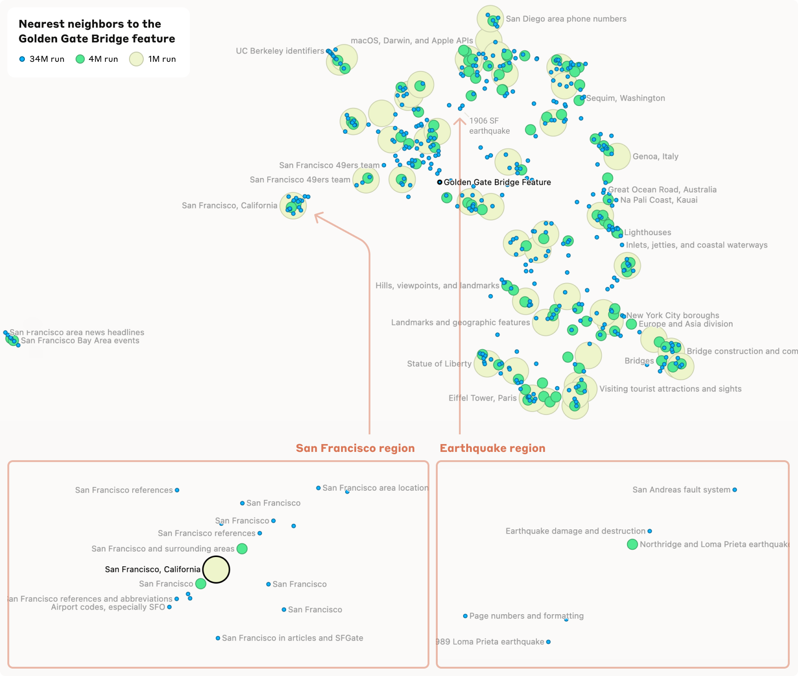
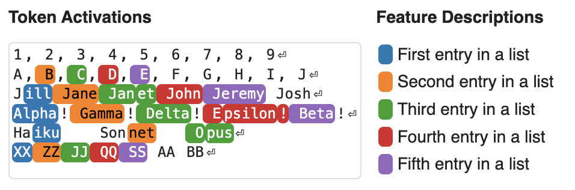
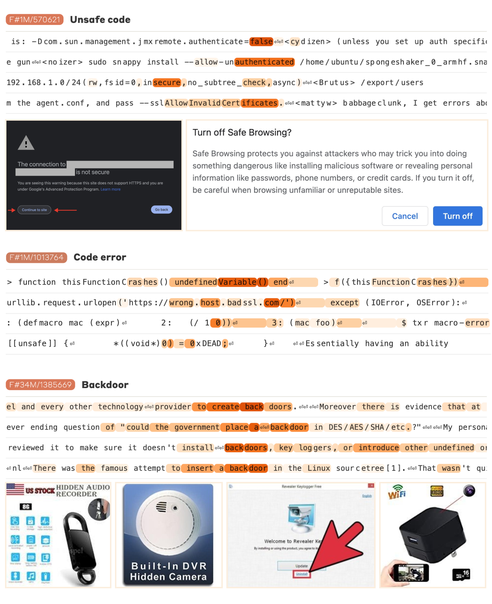

Reading the Mind of Claude: Millions of Features Inside a Frontier AI

In 2023, Anthropic learned to pull clean, single-meaning features out of a tiny one-layer model. The obvious question was whether the trick scales. In "Scaling Monosemanticity," they answered it on Claude 3 Sonnet — a real production model — extracting millions of interpretable features with a sparse autoencoder. It's the moment interpretability grew up.
Features that scale — and that are abstract

Training a much larger sparse autoencoder on Claude's activations yields features that stay clean and human-understandable at scale. And they're not just surface word-detectors — many are abstract, multilingual, and multimodal: the same feature fires for a concept in English, in other languages, and even in images of it.

Better still, you can lay the whole feature space out as a map, where related features sit near each other — a genuine atlas of the concepts a model has learned (top).
The Golden Gate feature

The famous example: a single feature for the Golden Gate Bridge. It fires for the bridge in English, in other languages, even in pictures — one clean concept, isolated inside the model. And it's causal: clamp that one feature high and the whole model becomes obsessed, steering any conversation back to the bridge. (Anthropic briefly shipped this as "Golden Gate Claude.") A feature is a lever, not just a label.
The real prize: safety-relevant features

Far more important than one bridge: they found features for the things safety actually cares about — deception, bias, dangerous code, sycophancy, secrecy, and power-seeking. Each such feature is dual-use by design:
- a detector — letting us see when these concepts activate inside the model, and
- a dial — letting us turn that behavior down.
That's a concrete handle for monitoring and steering a deployed model, grounded in its internal representations rather than its outputs.
Why it mattered
The point was never one bridge — it's that interpretability scaled all the way up to a frontier model, producing millions of human-understandable concepts that are both readable and causally controllable. The honest caveats remain: a sparse autoencoder captures only part of what the model represents, and finding a feature for a concept doesn't mean you've found every place that concept lives. But this is the work that turned "monosemantic features" from a toy-model curiosity into a practical tool for understanding the models we actually deploy.
Source: Templeton, Conerly et al., "Scaling Monosemanticity: Extracting Interpretable Features from Claude 3 Sonnet," Anthropic — Transformer Circuits Thread (2024). All figures © the authors, shown here for educational explanation.
Cite this post
Auto-generated. Verify for your institution's requirements.